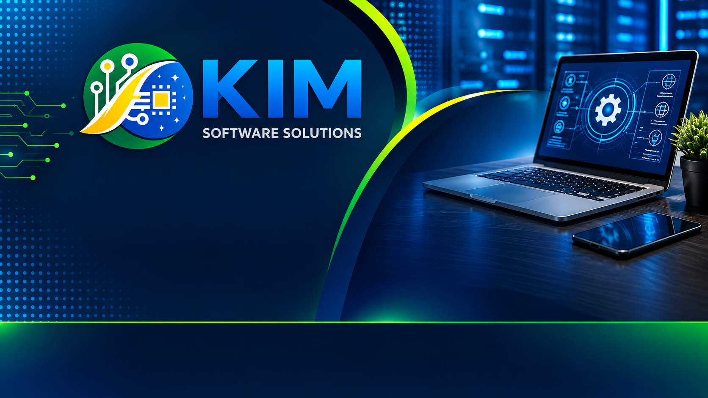

Suporte Remoto
Atendimento online para resolver problemas técnicos de forma rápida e segura.

Atendimento online para resolver problemas técnicos de forma rápida e segura.
Otimização, limpeza de sistema, correção de erros e melhoria de desempenho.
Remoção de vírus, proteção de dados e orientação para uso mais seguro.
Cópia, organização e recuperação básica de arquivos importantes.
Instalação de softwares, navegadores, periféricos e ferramentas.
Suporte, migração, configuração inicial e manutenção de sistemas.
Backup, restauração, migração de dados, atualização e otimização de dispositivos Android.
A KIM Software Solutions oferece suporte técnico remoto, manutenção preventiva, segurança digital, backup de dados e soluções para Windows, Linux e Android.
Nosso objetivo é ajudar pessoas e pequenos negócios a utilizarem seus equipamentos com mais segurança, organização e eficiência.
Baixe o RustDesk para permitir atendimento remoto autorizado.
Baixar RustDeskUse o Session para comunicação privada durante o atendimento.
Baixar SessionNavegador recomendado para segurança, privacidade e produtividade.
Baixar FirefoxComo solicitar suporte:
Entre em contato por e-mail ou pelo Session, explique o problema e aguarde a análise inicial.
49 93300-2981
PIX: disponível para clientes no Brasil.
PayPal: disponível para clientes internacionais.
Os dados de pagamento serão enviados após a análise e aprovação do serviço.